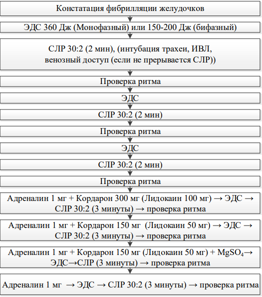

Алгоритм действий при нарушениях ритма, требующих проведения дефибрилляции (фибрилляция желудочков/желудочковая тахикардия без пульса).
У взрослых, наиболее частым ритмом, наблюдаемым при остановке кровообращения, является ФЖ, которой может предшествовать период ЖТ или даже суправентрикулярной тахикардии (СВТ).
• Начать СЛР в соотношении 30:2. При наличии кардиомонитора – подключить его к пострадавшему.
• Если ОК произошла при свидетелях, то реанимационные мероприятия можно начать с нанесения одного прекардиального удара: нанести отрывистый удар по нижней части грудины с высоты 20 см локтевым краем плотно сжатого кулака.
• Как только появится дефибриллятор – наложить электроды на грудь пострадавшего. Начать анализ ритма сердца.
• Разряд № 1. Если по данным мониторинга подтверждается наличие ФЖ или ЖТ без пульса – нанести 1 разряд (360 Дж – при монофазном импульсе, 150-200 Дж – при бифазном), минимизируя паузы между прекращением компрессий грудной клетки и нанесением разряда.
Всегда помнить о безопасности спасателя и окружающих при проведении дефибрилляции!
• Сразу же после нанесения разряда, не теряя времени на проверку ритма, продолжить СЛР 30:2 в течение 2-х мин – даже если первый разряд дефибриллятора восстановил нормальный ритм сердца, начальные сокращения сердца слишком слабые и редкие, и требуется поддержка их извне.
• После 2-х мин СЛР остановиться и проверить ритм по монитору, затрачивая на это минимальное время.
• Разряд № 2. Если снова по данным кардиомонитора выявляется ФЖ или ЖТ без пульса – нанести второй разряд (той же мощности) и без пауз продолжить СЛР 30:2 в течение 2-х мин.
• После 2-х мин СЛР остановиться и проверить ритм по монитору, затрачивая на это минимальное время.
• Разряд № 3. Если снова выявляется ФЖ или ЖТ без пульса – нанести третий разряд (той же мощности) и без пауз продолжить СЛР 30:2 в течение 2-х мин. После нанесения третьего разряда возможно введение лекарств (адреналин 1 мг, амиодарон 300 мг (лидокаин 100 мг) внутривенно или внутрикостно) параллельно с проведением СЛР.
• Далее – оценивать ритм сердца по кардиомонитору каждые 2 мин. При сохранении ФЖ или ЖТ без пульса – продолжать по описанному алгоритму, вводить адреналин по 1 мг и амиодарон 150 мг (лидокаин 50 мг) внутрикостно или внутривенно каждые 3-5 мин до восстановления спонтанного кровообращения.
• При развитии асистолии или ЭМД – см. Алгоритм действий при нарушениях ритма, не требующих дефибрилляции (ЭМД и асистолия).
• При выявлении по монитору организованного ритма сердца или появления признаков восстановления спонтанного кровообращения (движения, нормальное дыхание, кашель) – попытаться пальпировать пульс на магистральной артерии. При наличии пульса – начать лечение по алгоритму постреанимационного периода. При сомнении о наличии пульса – продолжить СЛР 30:2.
При проведении РРМ следует помнить о ряде причин ОК и своевременно корригировать их (правило 4Г:4Т).
Таблица 5. Потенциально устранимые причины смерти.
| Четыре «Г» | Четыре «Т» |
|---|---|
|
Убедитесь, что легкие пациента
вентилируются адекватно, с
использованием 100% кислорода, который
уменьшает риск гипоксии. Убедитесь, что
грудная клетка на вдохе поднимается и с
обеих сторон выслушиваются дыхательные
шумы (дыхание), тщательно проверьте, что
трахеальная трубка не введена в бронх или
пищевод. |
Торакальная причина –напряженный
пневмоторакс может быть причиной
остановки кровообращения, а также
следствием попыток катетеризации
центральной вены. Диагноз ставится
клинически. Немедленно выполните
декомпрессию плевральной полости
путем торакоцентеза, после чего
установите плевральный дренаж. |
Примечания:
- Во время проведения РРМ периодически проверять плотность контакта
с кожей пластин дефибриллятора и электродов кардиомонитора – неплотный
контакт может служить причиной искрения при проведении дефибрилляции
и ошибок при анализе ритма.
- Персистирующая ФЖ/ЖТ без пульса может быть показанием к
чрескожному коронарному вмешательству для устранения причины аритмии
(тромбоз коронарной артерии). В таком случае следует рассмотреть
возможность использования устройств для механической СЛР на время
транспортировки больного и проведения чрескожного коронарного
вмешательства.
- Правила использования кислорода при дефибрилляции: маски или
носовые канюли, дыхательные мешки следует во время проведения
дефибрилляции снимать и удалять на расстояние минимум 1 м от
пострадавшего; контур аппарата ИВЛ отсоединять не следует.
Электроды нельзя накладывать на область установки имплантированного кардиовертера-дефибриллятора и трансдермальных лекарственных систем.
Схема 2. Алгоритм действий при нарушениях ритма, требующих проведения дефибрилляции

Искать устранимые причины (правило 4Г и 4Т)
После восстановления ритма инфузия Кордарона 900 мг на сутки или Лидокаина 2-5 мг/мин.
Алгоритм действий при нарушениях ритма, не требующих дефибрилляции (ЭМД и асистолия)
• Начать СЛР 30:2 и ввести адреналин 1 мг, как только будет обеспечен сосудистый доступ. При наличии кардиомонитора – подключить его к пострадавшему.
• Проверить правильность наложения электродов ЭКГ! При наличии Рзубцов на фоне асистолии следует применить электрокардиостимуляцию. Если возникают сомнения по поводу ритма (асистолия или мелковолновая ФЖ) – продолжать СЛР, не проводить попыток дефибрилляции, которые только увеличат повреждение миокарда.
• Обеспечить проходимость дыхательных путей и искусственную вентиляцию легких (ИВЛ). Продолжить СЛР в течение 2-х мин.
• После 2-х мин СЛР проверить ритм по кардиомонитору, затрачивая на это минимальное время.
• При выявлении асистолии – продолжить СЛР, вводить адреналин 1 мг каждые 3-5 мин.
• При развитии ФЖ или ЖТ – см. Алгоритм действий при нарушениях ритма, требующих проведения дефибрилляции (фибрилляция желудочков/желудочковая тахикардия без пульса) с момента начала введения препаратов (адреналин 1 мг + амиодарон 300 мг).
• При выявлении по монитору организованного ритма сердца или появления признаков восстановления спонтанного кровообращения (движения, нормальное дыхание, кашель) – попытаться пальпировать пульс на магистральной артерии. При наличии пульса – начать лечение по алгоритму постреанимационного периода. При сомнении о наличии пульса – продолжить СЛР 30:2.
• Искать возможные устранимые причины (правило 4Г и 4 Т) (табл. 5).
В процессе проведения реанимационных мероприятий интубация трахеи не должна продолжаться более 30 с: если ее не удается провести за это время, то устанавливается I-Gel, Комбитьюб, ларингеальная маска или возобновляется вентиляция легких при помощи маски-мешка.
Как только пациент окажется интубированным, продолжают компрессию грудной клетки с частой 100-120 компрессий в минуту, без перерывов во время вентиляции легких.
Проводят искусственное дыхание с частотой 10 раз в минуту, объем вдоха 40-600 мл, FiO2 – 100%; избегают гипервентиляции. Паузы при выполнении компрессии грудной клетки ведут к быстрому падению перфузионного давления в коронарных сосудах сердца. При возобновлении компрессий грудной клетки после перерыва, требуется некоторое время, прежде чем восстановится адекватное перфузионное давление в коронарных артериях.
Осложнения реанимации: Наиболее частым осложнением является перелом ребер при грубом проведении массажа или смещении рук реаниматора со средней линии грудины. Перелом ребер опасен повреждением легких при продолжении массажа сердца и развитием гемопневмоторакса. Следующим по частоте осложнением является регургитация и аспирация желудочного содержимого с последующим развитием аспирационных деструктивных пневмоний, поэтому, чем быстрее будет проведена интубация трахеи, тем безопаснее для пациента. Достаточно часто наблюдается подкапсульный разрыв печени, особенно при имеющейся гепатомегалии. Причины разрыва печени: слишком низкое расположение рук при массаже, не расстегнут поясной ремень.
Типичные ошибки при проведении базовых и расширенных реанимационных мероприятий
- Затягивание начала СЛР и проведения дефибрилляции, потеря времени на второстепенные диагностические, организационные и лечебные процедуры.
- Отсутствие единого руководителя, присутствие посторонних лиц.
- Неправильная техника проведения компрессий грудной клетки (редкие или слишком частые, поверхностные компрессии, неполная релаксация грудной клетки, перерывы в компрессиях при наложении электродов, перед и после нанесения разряда, при смене спасателей).
- Неправильная техника искусственного дыхания (не обеспечена проходимость дыхательных путей, герметичность при вдувании воздуха, гипервентиляция).
- Потеря времени на поиск внутривенного доступа.
- Многократные безуспешные попытки интубации трахеи.
- Отсутствие учета и контроля проводимых лечебных мероприятий.
- Преждевременное прекращение реанимационных мероприятий.
- Ослабление контроля над больным после восстановления кровообращения и дыхания.